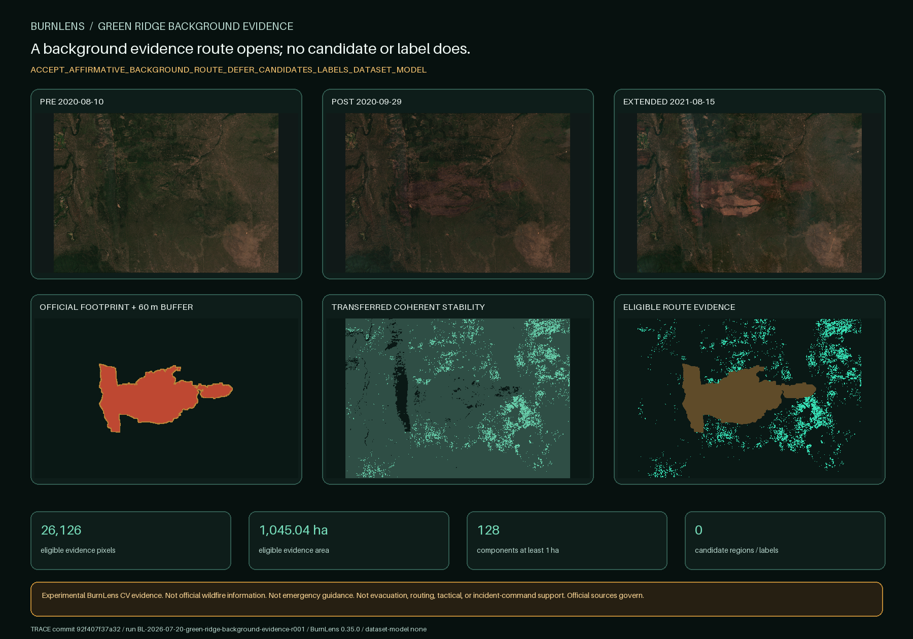

BURNLENS / PHASE TWO / ISSUE #480
A background evidence route opens; no candidate or label does.

Exact optical products
| Role | Product | Sensing time |
|---|---|---|
| green-ridge-2020-pre | S2B_MSIL2A_20200810T185919_N0500_R013_T10TFQ_20230509T050550.SAFE | 2020-08-10T19:12:09.844505Z |
| green-ridge-2020-post | S2B_MSIL2A_20200929T190109_N0500_R013_T10TFQ_20230427T010543.SAFE | 2020-09-29T19:12:09.525181Z |
| green-ridge-2021-extended | S2B_MSIL2A_20210815T185919_N0500_R013_T10TFQ_20230119T130649.SAFE | 2021-08-15T19:12:06.420153Z |
Conjunctive evidence rule
Three-scene clear/numeric evidence; transferred four-signal near-anniversary stability; at least 7 of 9 stable neighbors; MTBS and RAVG encoded class 0 agreement; outside the 60 m source-boundary uncertainty buffer. No single signal is sufficient.
Outside-footprint status, unchanged class, low change, SCL, or apparent stability is insufficient alone. The threshold set transfers unchanged from the established protocol; no threshold was searched against this result.
Gate result
OPEN_BACKGROUND_EVIDENCE_ROUTE_FOR_SEPARATE_CANDIDATE_PROPOSAL
The next gate is a separate deterministic region proposal followed by owner yes/no/uncertain review. This report creates neither.
Contains modified Copernicus Sentinel data 2020-2021, accessed through CDSE; Monitoring Trends in Burn Severity Project (U.S. Geological Survey and USDA Forest Service); USDA Forest Service.
No ground truth, field validation, official unburned map, owner response, dataset, split, baseline, model, accuracy, endorsement, or operational readiness exists.
Trace: commit 92f407f37a32a020c1a47bb1931015b3607c2d89 · BurnLens 0.35.0 · run BL-2026-07-20-green-ridge-background-evidence-r001 · label schema burn-scar-five-state-schema-v0.1.0 · dataset/model none.